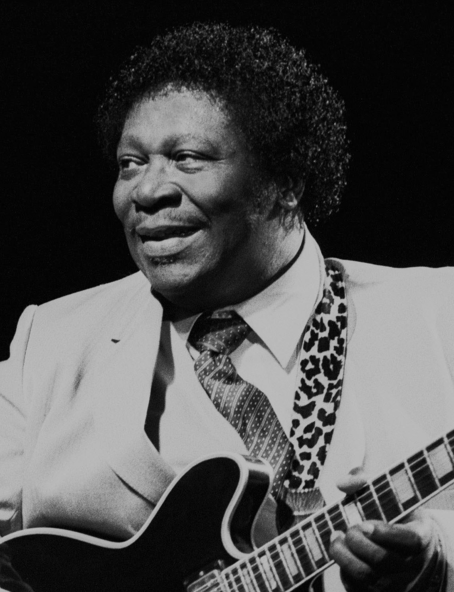
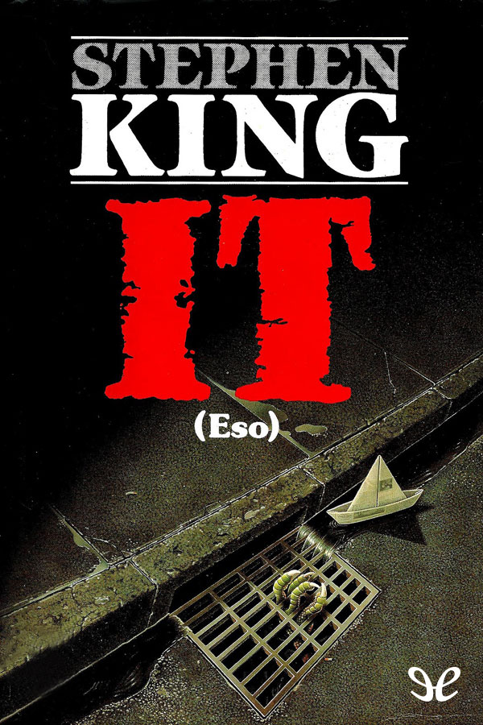

ADELE

Adele Laurie Blue Adkins (Londres, 5 de mayo de 1988), conocida simplemente como Adele, es una cantautora y multinstrumentista británica.3 Es una de las artistas musicales con mayores ventas del mundo, con más de 120 millones de ventas entre discos y sencillos.4 Desde pequeña mostró interés por la música y en 2006 se egresó de la BRIT School, año en el que firmó un contrato con XL Recordings, tras ser descubierta por unos demos que un amigo publicó en la red social MySpace.5 En 2008, lanzó su álbum de estudio debut, 19, el cual se situó en la posición 1 de la lista de álbumes británica y ha sido certificado ocho veces platino en Reino Unido y triple platino en Estados Unidos.67 En los Premios Brit de 2008 recibió el galardón ‹elección de los críticos› y también ganó la encuesta Sound of 2008 realizada por la BBC.8 Un año después, en la 51.ª entrega de los Premios Grammy ganó los galardones mejor artista nuevo y mejor interpretación vocal pop femenina por «Chasing Pavements».9
AC/DC

AC/DC es una banda de hard rock británica-australiana, formada en 1973 en Australia por los hermanos escoceses Malcolm Young y Angus Young. Sus álbumes se han vendido en un total estimado de 200 millones de copias,34 embarcándose en giras multitudinarias por todo el mundo y sus éxitos han musicalizado varias producciones cinematográficas sobresalientes.5678 Son famosas sus actuaciones en vivo, resultando vibrantes y exultantes espectáculos de primer orden.9 Mucho de ello se debe al extravagante estilo de su guitarrista principal y símbolo visual, Angus Young, quien asume el rol de guitarrista principal durante los conciertos, gracias a sus dinámicos y adrenalínicos despliegues escénicos uniformado de colegial callejero.10 Al comienzo, los conciertos y tiempos por los cuales sufrieron diversos cambios en su alineación.1112 En 1974, la llegada del cantante Bon Scott se convertiría en una pieza clave del éxito del grupo. Su presencia en escena, lo convirtió en uno de los personajes más carismáticos de la historia del hard rock.131415 La formación se estabilizaría con Cliff Williams (bajo) y Phil Rudd (baterista).
BILLIE EILISH

Billie Eilish Pirate Baird O'Connell (Los Ángeles, California; 18 de diciembre de 2001) conocida simplemente como Billie Eilish es una cantante y compositora estadounidense. Adquirió fama como artista cuando tenía 13 años, a raíz del sencillo «Ocean Eyes» que se publicó en 2015 en SoundCloud y volvió a lanzarse con un vídeo musical en YouTube en 2016, a la edad de 14 años, lo que la convirtió en un fenómeno viral. En 2017, publicó su EP Don't Smile at Me, producido por su hermano Finneas O'Connell.45 Su primer álbum de estudio, When We All Fall Asleep, Where Do We Go?, se publicó el 29 de marzo de 2019. Según la RIAA, a lo largo de su carrera ha logrado dos canciones con disco de platino: «Ocean Eyes» y «Lovely», esta última con Khalid, y siete sencillos con disco de oro. El álbum se llevó el Grammy al álbum del año y al mejor álbum de pop vocal en los premios de 2020. Asimismo, Eilish ganó el premio a la mejor artista novel y su éxito «Bad Guy» ganó la canción del año y grabación del año
MOZART

Johannes Chrysostomus Wolfgangus Theophilus Mozarta (Salzburgo, 27 de enero de 1756-Viena, 5 de diciembre de 1791), más conocido como Wolfgang Amadeus Mozart, fue un compositor, pianista, director de orquesta y profesor del antiguo Arzobispado de Salzburgo (anteriormente parte del Sacro Imperio Romano Germánico, actualmente parte de Austria), maestro del Clasicismo, considerado como uno de los músicos más influyentes y destacados de la historia. La obra mozartiana abarca todos los géneros musicales de su época e incluye más de seiscientas creaciones, en su mayoría reconocidas como obras maestras de la música sinfónica, concertante, de cámara, para fortepiano, operística y coral, logrando una popularidad y difusión internacional.
- 


Terror
¿Quien o que mutila y mata a los niños de un pequeño pueblo norteamericano? ¿Por que llega cíclicamente el horror a Derry en forma de un payaso siniestro que va sembrando la destrucción a su paso? Esto es lo que se proponen averiguar los protagonistas de esta novela. Tras veintisiete años de tranquilidad y lejanía, una antigua promesa infantil les hace volver al lugar en el que vivieron su infancia y juventud como una terrible pesadilla. Regresan a Derry para enfrentarse con su pasado y enterrar definitivamente la amenaza que los amargó durante su niñez. Saben que pueden morir, pero son conscientes de que no conocerán la paz hasta que aquella cosa sea destruida para siempre.
Ver MasMusica

En el transcurso de la historia, la música nos ha definido como especie. Sin embargo, es una parte ignorada del relato de nuestros orígenes. En busca de ese cosmos musical, este libro nos ofrece un viaje estimulante sobre la relación del ser humano con este arte. Una obra extraordinariamente tejida que abarca desde su evolución hasta los daños del colonialismo musical, pasando por un enfoque más científico sobre cómo responde el cerebro a la experiencia de músicos y aficionados. Una lectura para reflexionar sobre la importancia de la música y su presencia en nuestras vidas.
Ver MasGastronomia

Casi nunca tenemos tiempo para cocinar. Pero no por ello dejamos de soñar con platos originales, que a la vez resulten apetitosos, sencillos de preparar y que, además, sean aptos para todos los gustos y bolsillos. Karlos Arguiñano lo sabe y, por eso, el recetario que tienes entre las manos reivindica esa cocina, hecha en casa, que se puede elaborar fácilmente, pero sin perder la capacidad de sorprender a los tuyos. Servir un aguacate crujiente al horno como entrante o una ensalada de lombarda, nueces y naranja; decantarte por unos socorridos tallarines con queso y panceta o lanzarte, directamente, al revuelto de gulas y alcachofas son solo algunas de la soluciones rápidas y sabrosas que encontrarás en Cocina fácil y rico, un libro pensado para triunfar, desde luego, pero sobre todo para hacerte la vida más cómoda y agradable.
Ver MasEroticos

Valeria es escritora de historias de amor. Valeria vive el amor de forma sublime. Valeriatiene tres amigas: Nerea, Carmen y Lola. Valeria vive en Madrid. Valeria ama a Adrián hasta que conoce a Víctor. Valeria necesita sincerarse consigo misma. Valeria llora,Valeria ríe, Valeria camina... Pero el sexo, el amor y los hombres no son objetivos fáciles. Valeria es especial. Como tú. En los zapatos de Valeria es el primer libro de la«Saga Valeria», la primera obra deElísabet Benavent, que inició su carrera literaria autopublicándose y que en poco tiempo conquistó a cientos de lectores y se situó en los primeros puestos de la lista de más vendidos de ficción.
Ver MasAventuras

Nacido en Verona en 1862 en una familia de pequeños comerciantes, Salgari manifestó pronto su pasión por el mar: en 1878 se inscribe en el Regio Istituto Tecnico e Nautico de Venecia, aunque nunca llegó a licenciarse. De vuelta en Verona, se dedica por entero a escribir y, en 1883, comienza a publicar por entregas su primera novela: Tay-See. A partir de aquí, y hasta su muerte en 1911, Salgari se convirtió en un escritor frenético, acuciado por un estado permanente de necesidad económica. Antes de cumplir cincuenta años, Salgari puso fin a su vida –complicada, triste y llena de desgracias familiares– a la manera tradicional japonesa, haciéndose un sepuku. Aunque no sean tan conocidos como Morgan, Barbanegra o el capitán Kidd, la hermandad de los piratas contó también con destacados miembros italianos, como Jean Moretti, Andrea Morisco o Papacodda.
Ver MasArte

El objetivo de este título es que sus lectores aprendan a reconocer las normas y los repertorios artísticos básicos que rigieron a lo largo de los diferentes periodos del Arte Clásico en la Antigüedad y a relacionarlos con las circunstancias históricas que los favorecieron.
Ver Mas